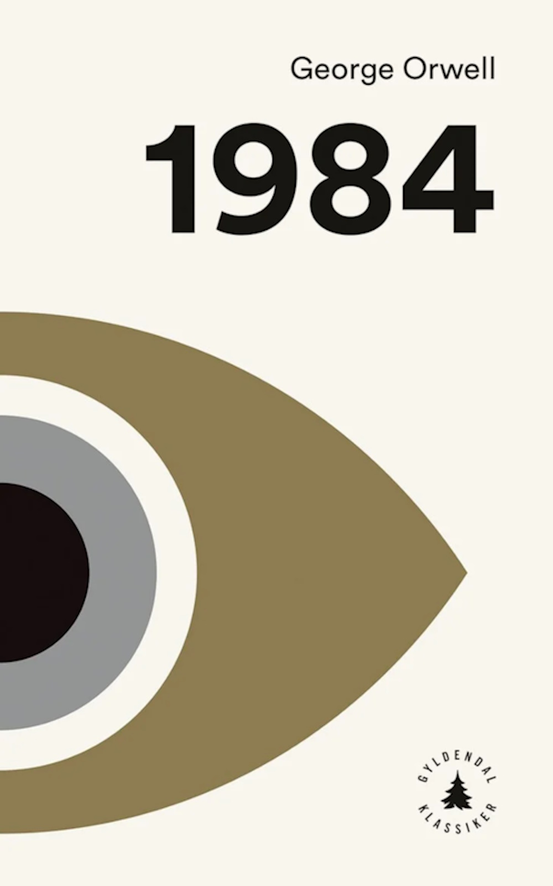
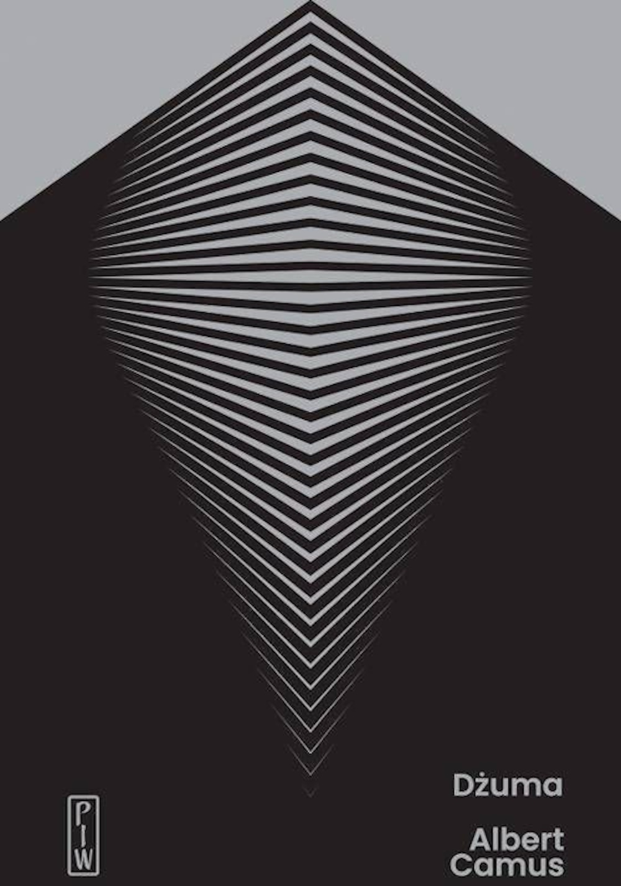
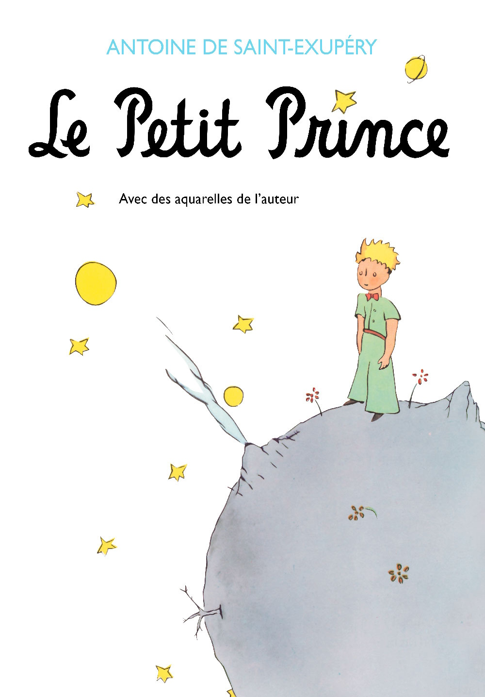
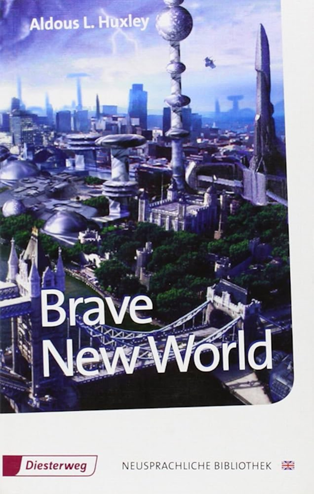
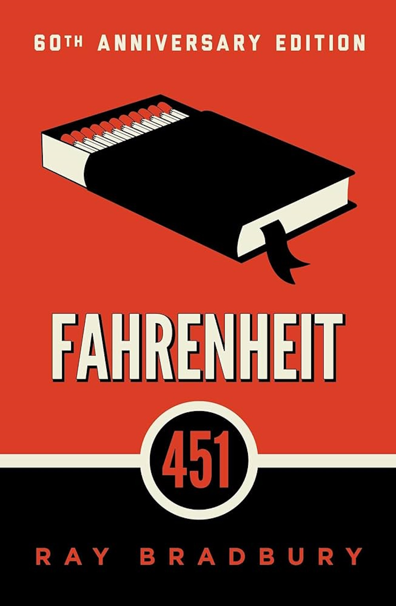
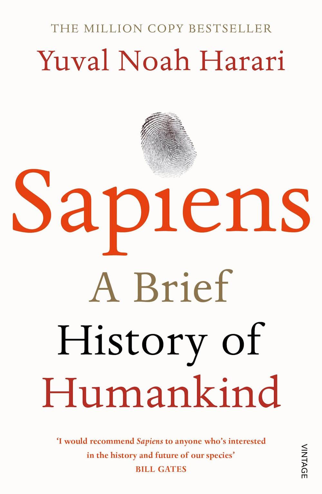
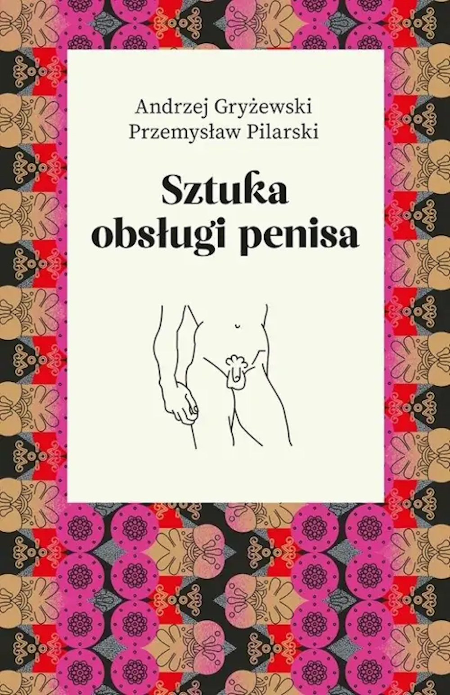
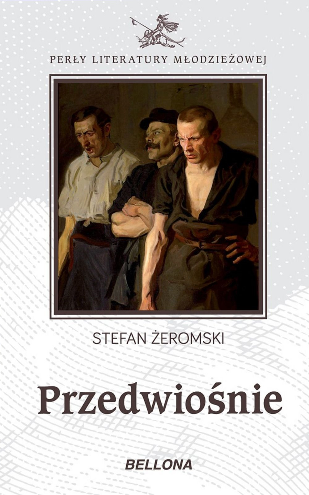
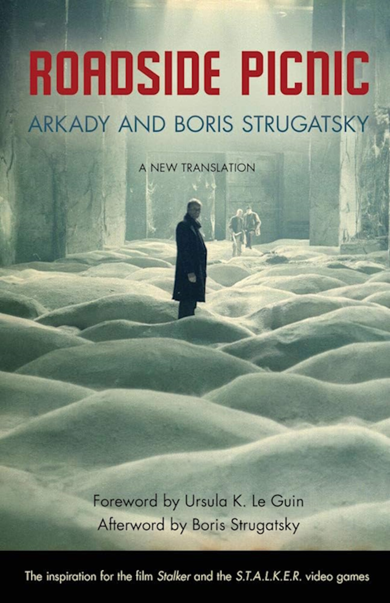

George Orwell is the embodiment of Blair’s ideals: clarity, fairness, patriotism without nationalism, and truthfulness in expression.

Camus’s name remains tied to his identity as both a philosopher of resistance and a witness to human dignity, refusing illusion even in tragedy.

Antoine sought to reconcile technology and tenderness, courage and vulnerability, revealing that true greatness lies in care and imagination.

Huxley’s name became synonymous with critical foresight and his writing sought to awaken consciousness before humanity traded truth for convenience.

Bradbury represents the fire of creativity itself. A writer who refused cynicism, believing imagination was not fantasy, but our most vital act of resistance.

Harari’s public persona: calm, analytical, and minimalist. It mirrors the tone of his writing: fact-based, philosophical, and forward-looking.

A. G. - Clinical psychologist, sexologist, and psychotherapist. P. P. - Dramatist, screenwriter, journalist, and stand-up comedian. (I don't know much more about them to be honest)Marx represents a voice demanding justice, equality, and awareness of the forces that define society.

Zeromski believed that literature should heal, awaken, and demand responsibility from both the reader and self - Both himself and his creations.

The Brothers name, Strugatsky, shows hope and defiance through imagination. Proving even in a controlled society, thought and empathy could remain free.